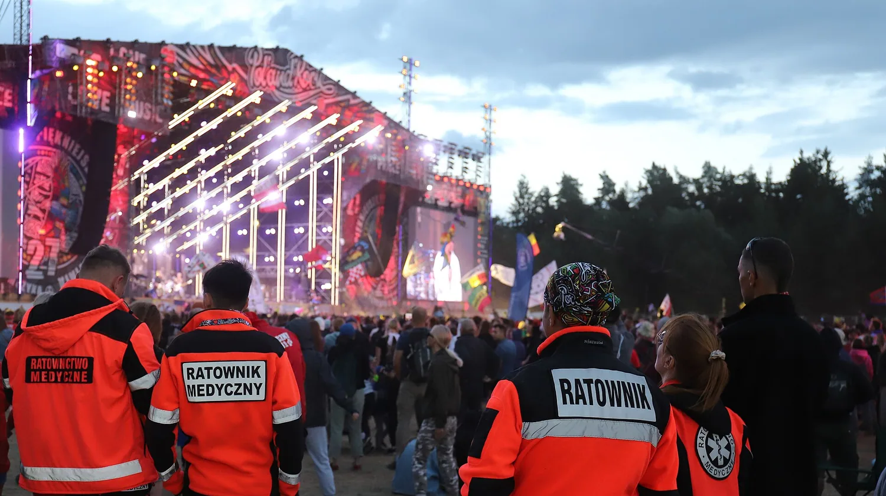
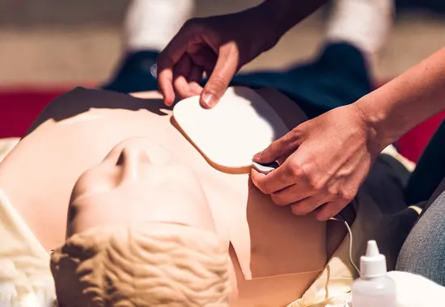
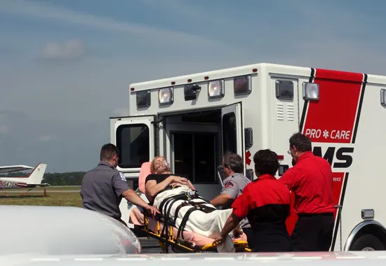
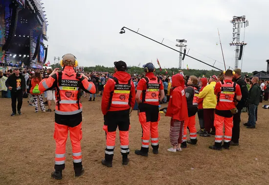
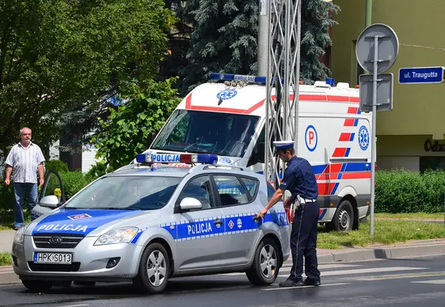
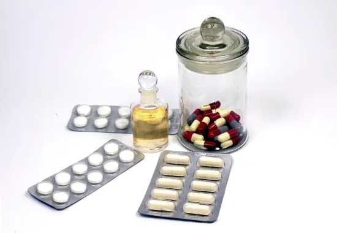
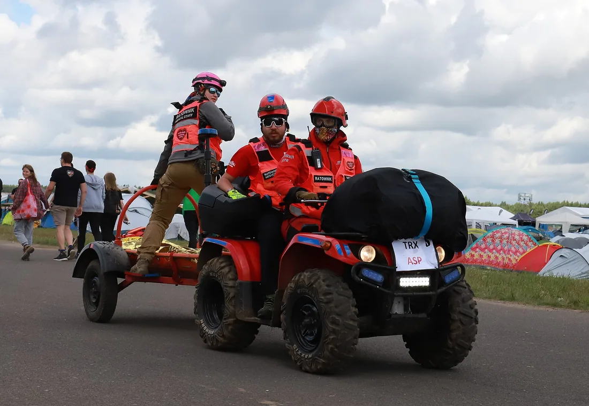
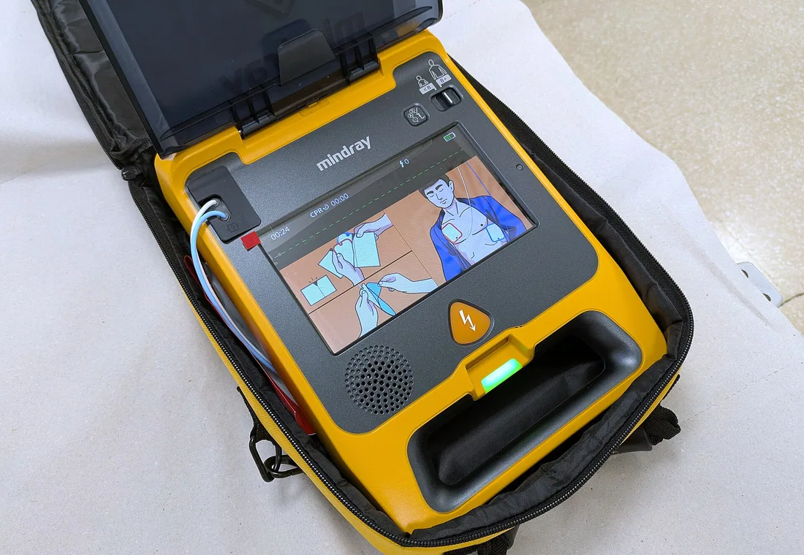

Poland Rescue Team — KPP Special Responsezespół ratowniczy RatMed24
Poland Rescue Team — KPP Special Responsezespół ratowniczy RatMed24
Ratownicy, szkolenia i sprzęt pod jednym numerem
Szkolimy pracowników z pierwszej pomocy, zabezpieczamy imprezy, wozimy pacjentów na dializy i do lekarza, a leki dostarczamy tego samego dnia. Jeden dyspozytor do wszystkich czterech usług.



Cztery usługi, jeden dyspozytor
Nie musisz pilnować czterech firm. Ten sam zespół, który szkoli Twoją załogę, zabezpiecza Twoją imprezę i dowozi sprzęt, którego zabrakło.
Szkolenia pierwszej pomocy
Dla firm, urzędów, szkół i przedszkoli. Przyjeżdżamy z fantomami i AED pod Twój adres.
Zobacz programy i ceny →
Zabezpieczenie imprez
Patrole, zespoły wyjazdowe i punkt pomocy. Obsada wyliczona z rozporządzenia.
Policz obsadę swojej imprezy →
Transport medyczny
Dializy, wizyty u specjalisty, powrót ze szpitala. Pacjent chodzący, na wózku i leżący.
Zobacz, jak zamówić kurs →
Ekspresowy transport leków
Dla aptek, przychodni i hurtowni. Jeden kurs, bez sortowni, z kontrolą temperatury.
Zobacz warunki przewozu →Hierarchia dowodzenia i funkcje operacyjne
Zespół Poland Rescue Team — KPP Special Response ma stałą strukturę dowodzenia. Każdy ratownik odpowiada przed jednym dowódcą, a role są podzielone przed wyjazdem.
Dowódca Zespołu
Team Leader- Bazyfikacja i koordynacja taktyczna na miejscu zdarzenia.
- Łączność i współdziałanie z ZRM, PSP, Policją i WOPR/GOPR.
- Podejmowanie decyzji o dyslokacji i zakończeniu działań.
Starszy Ratownik KPP
Senior Specialist- Prowadzenie segregacji medycznej (Triage START / JumpSTART).
- Nadzór nad sprzętem medycznym (AED, zestaw R1, tlenoterapia).
- Zastępowanie Dowódcy Zespołu podczas jego nieobecności.
Ratownik KPP
Specialist- Realizacja procedur Kwalifikowanej Pierwszej Pomocy.
- Resuscytacja krążeniowo-oddechowa, tamowanie masywnych krwotoków.
- Unieruchamianie złamań, opatrywanie ran i ochrona termiczna.
Ratownik / Kierowca
Support / Driver- Bezpieczny transport zespołu i obsługa pojazdu ratowniczego.
- Zabezpieczenie terenu akcji i koordynacja radiowa.
- Wsparcie techniczne oraz logistyczne na miejscu zdarzenia.
Secundus ad Neminem — „drugi po nikim”. Meldunki SBAR przy przekazaniu poszkodowanego do ZRM, odprawa przed wyjazdem i omówienie akcji po jej zakończeniu. Pełna struktura zespołu →
Kiedy dzwonić do nas, a kiedy na 112
Nie jesteśmy pogotowiem ratunkowym i nie zastępujemy numeru alarmowego. Mówimy to wprost, bo pomyłka w tej sprawie kosztuje najwięcej.
- 112 albo 999 — utrata przytomności, ból w klatce piersiowej, silne krwawienie, wypadek, każdy stan nagłego zagrożenia życia. Bezpłatnie, natychmiast.
- RatMed24 — przewóz zaplanowany: dializa, wizyta u specjalisty, wypis ze szpitala, przewóz między placówkami. Umawiany z wyprzedzeniem, płatny.
- RatMed24 — zabezpieczenie medyczne wydarzenia, szkolenie załogi, dostawa leku albo sprzętu.

Co możesz sprawdzić przed podpisaniem
Jak wygląda zamówienie
Telefon albo formularz
Mówisz, czego potrzebujesz i na kiedy. Przy imprezie: data, miejsce i liczba uczestników.
Wycena na piśmie
Dostajesz skład obsady albo program szkolenia z ceną — jedna liczba, nie widełki.
Potwierdzenie terminu
Rezerwujemy zespół i sprzęt. Przy imprezach masowych pilnujemy terminu wniosku do urzędu.
Realizacja i dokumenty
Zaświadczenia, raport z zabezpieczenia albo protokół dostawy. Faktura z terminem płatności.
Gdzie dojeżdżamy
Szkolenia i zabezpieczenia realizujemy z dojazdem do siedziby klienta. Transport pacjentów obsługujemy w naszym regionie i na trasach dalekobieżnych. Przewóz leków i artykułów medycznych — cała Polska.
Sprzęt, na którym sami pracujemy
Apteczki zakładowe, torby i plecaki ratownicze, defibrylatory, unieruchomienia i odzież. Powiedz, ile osób pracuje w zakładzie i jakie są ryzyka — skompletujemy zestaw, zamiast kazać Ci wybierać z katalogu.

Najczęstsze pytania
Czym różni się transport medyczny od karetki pogotowia?
Czy wystawiacie fakturę z odroczonym terminem płatności?
Na jakim terenie działacie?
Ilu ratowników wymaga impreza na 5000 osób?
Czy szkolenie BHP zastępuje szkolenie z pierwszej pomocy?
Czy można zamówić kilka usług na jednej fakturze?
Powiedz, co i na kiedy
Najszybciej przez telefon. Jeżeli wolisz napisać — wypełnij formularz, oddzwonimy z konkretną wyceną, a nie z prośbą o dosłanie szczegółów.
-
+48 XXX XXX XXXDyspozytor — wszystkie cztery usługi
-
kontakt@ratmed24.plZapytania ofertowe i zamówienia jednostek
-
Adres — do uzupełnieniaBaza i teren działania
-
Godziny dyżuru — do uzupełnieniaZgłoszenia przyjmujemy telefonicznie